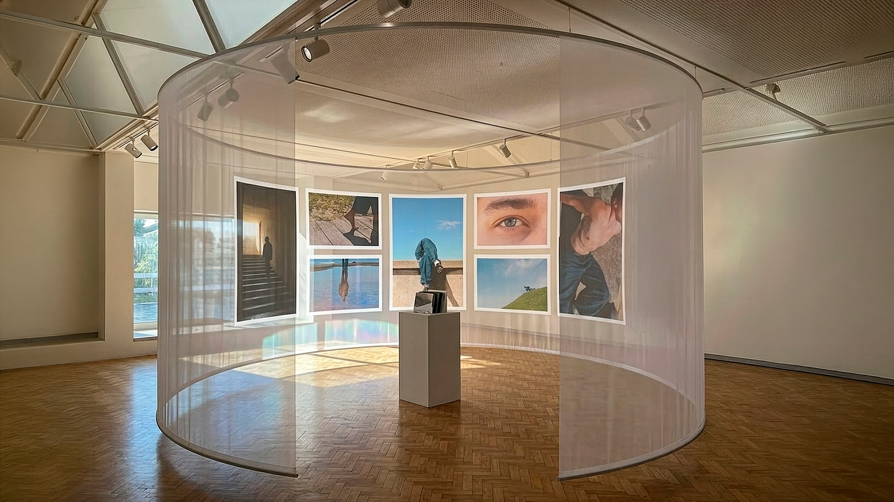
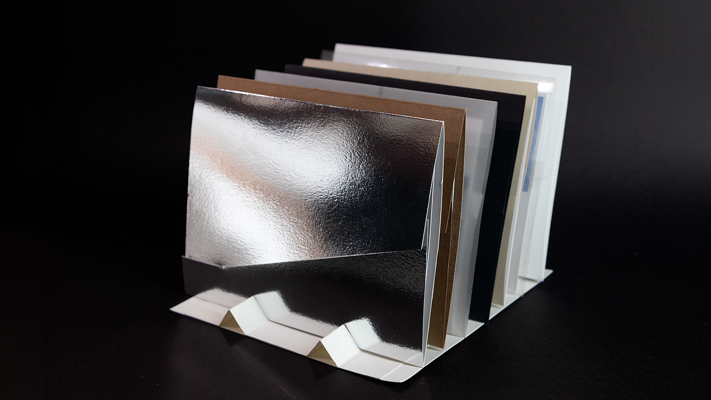
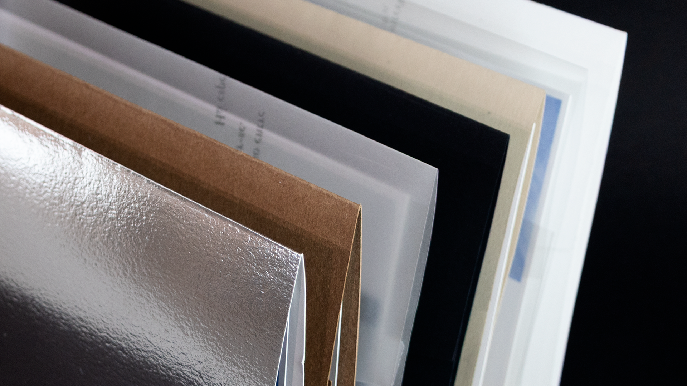
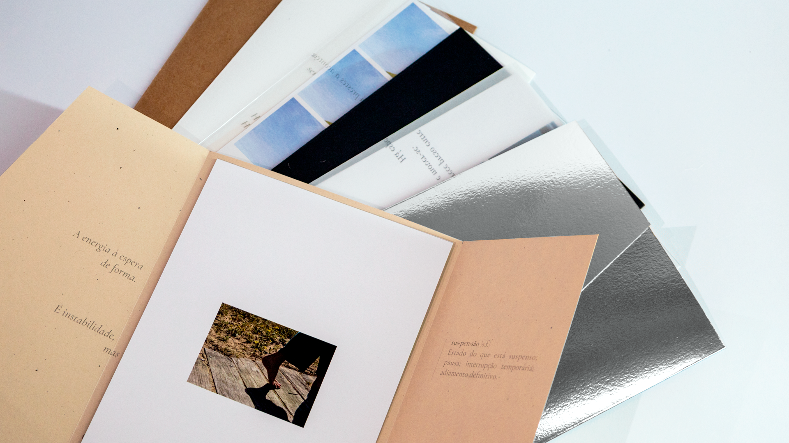
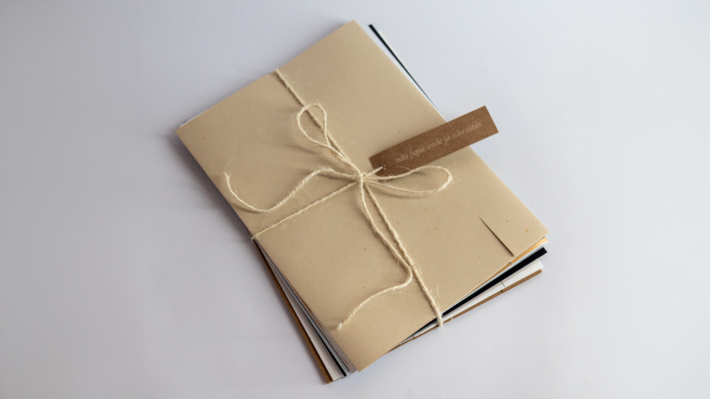
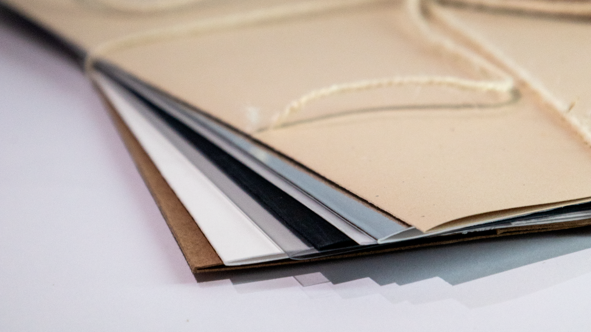
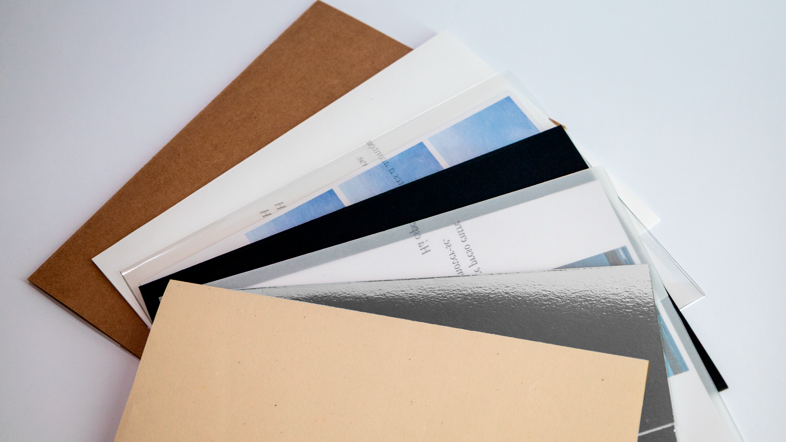

Desenvolvido através de três suportes complementares — publicação, instalação e website — o projeto permanece em constante deslocação. Em vez de estabelecer uma sequência fixa, cada meio prolonga os estados do outro, permitindo que a experiência se reorganize através da matéria, da imagem e do gesto.

o percurso não procura solução,
mas permanência, atenção e latência.
mas permanência, atenção e latência.



A publicação constitui o núcleo físico do projeto. Sete encartes independentes são reunidos por um cordão orgânico, recusando uma ordem única de leitura.


cada suporte participa
na construção de significado.
na construção de significado.

Faz do gesto a tua única resposta. Sabendo que, ao moveres-te, trocas o infinito para finalmente viveres a vida.